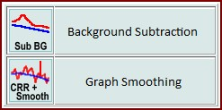
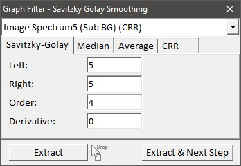
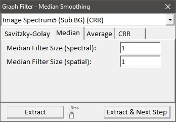
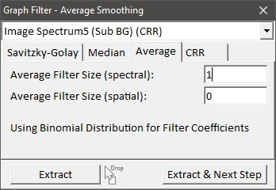
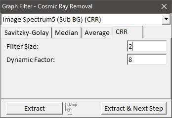
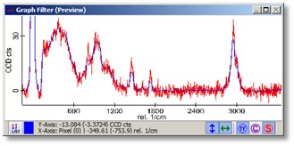

|
描述
使用此对话框，可以对光谱应用多个光谱平滑滤波，或进行宇宙射线去除，这是光谱预处理的第一步。
输入和结果
输入：
一个或多个图谱对象（单个光谱、线或图像图谱对象）。
结果：
一个平滑或宇宙射线去除后的图谱数据对象。
用户界面
提取（按钮和拖放区）
按"提取"按钮以对输入图谱对象的所有光谱启动当前选择的平滑或宇宙射线去除算法。
您也可以从项目管理器拖放多个图谱对象到此按钮，以使用相同的算法和设置进行批处理。
提取和下一步（按钮）
向导功能：您可以选择是否希望对当前计算结果进行背景扣除或进一步的图谱平滑算法：

如果选择"Savitzky-Golay"选项卡，图谱使用Savitzky-Golay滤波算法进行平滑。

左侧（整数编辑）：
定义平滑算法的窗口大小（当前像素左侧）
总窗口大小为左侧 + 右侧 + 1。
右侧（整数编辑）：
定义平滑算法的窗口大小（当前像素右侧）
总窗口大小为左侧 + 右侧 + 1。
阶数（整数编辑）：
拟合到平滑窗口的多项式的阶数。
导数（整数编辑）：
定义滤波的导数阶数。值0表示无导数，即仅进行平滑。
如果输入1，计算结果将是一阶导数；得到的数据可用于例如在进行基础分析时对荧光不敏感。
如果选择中值选项卡，图谱使用中值滤波算法进行平滑。

中值滤波大小（光谱）：
中值滤波的光谱滤波大小。总光谱窗口大小为 2*<滤波大小> + 1。
中值滤波大小（空间）：
中值滤波的空间滤波大小。如果大于零，相邻扫描像素的光谱用于平滑。
总窗口大小为 <滤波大小 * 2 + 1>^2 乘以总光谱窗口大小。
如果选择平均选项卡，图谱使用平均滤波算法进行平滑，该算法使用二项式分布的滤波系数。

平均滤波大小（光谱）：
平均滤波的光谱滤波大小。总光谱窗口大小为 2*<滤波大小> + 1。
平均滤波大小（空间）：
平均滤波的空间滤波大小。如果大于零，相邻扫描像素的光谱用于平滑。
总窗口大小为 <滤波大小 * 2 + 1>^2 乘以总光谱窗口大小。
如果选择CRR选项卡，将使用宇宙射线检测算法从图谱中移除宇宙射线。

滤波大小：
宇宙射线检测算法的滤波大小。总窗口大小为 2*<滤波大小> + 1。
动态因子：
该因子改变宇宙射线检测算法的灵敏度（较小的值意味着较高的灵敏度）。

预览图谱查看器窗口以红色图谱显示原始图谱对象，以蓝色图谱显示结果预览。